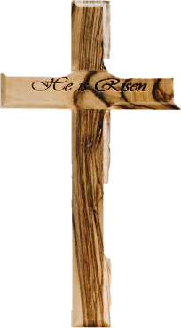

ELE VIVE!

Menu:
Minhas Redes:


SERES HUMANOS CRIADOS À IMAGEM DE DEUS
Nota teológica adaptada da obra de R.C.Sproul "Essential Truths of the Christian Faith"
Na arte, a fabricação de imagens é um exercicio de beleza Pintura, escultura e coisas afins costumam ser imitativas Através de nossa habilidade, descre vemos os objetos extraidos da vida real
O artista ultimo é Deus Quando formou o universo, ele deixou sua própria marca, de modo que os céus declaram sua glóna e o firmamento exibe a obra de sua mão
Quando Deus fez as criaturas que encheram a terra e o mar, criou uma criatura para que fosse feita de um modo singular, à sua propria imagem Gênesis 1.26, 27 declara.
e moral Nós também somos agentes morais equipad com mente, coração e vontade Essas faculdades tornam possivel para nós espelhar a santidade de Deus a quale nossa vocação original
O termo homem, quando usado em passagens biblicas tais como "Deus criou o homem a sua própria imagem (Gn 1.27), significa "humanidade" Ambos macho e fêmea da espécie humana são feitos a imagem de Deus Parte da imagem inclui a vocação da raça humana para gover nar a terra, para ter dominio sobre ela Somos chamales a vestir, encher e guardar a terra como vice-regentes de Deus Aqui somos chamados a refletir o carater do justo governo de Deus sobre o universo Ele nunca devasta ou tira partido do que governa, mas, ao contrano reina com justiça e benignidade
Então, disse Deus "Façamos o homem à nossa imagem, conforme a nossa semelhança, tenha ele domínio sobre os peixes do mar, sobre as aves dos céus, sobre os animais domésticos sobre toda a terra e sobre todos os répteis que rastejam pela terra" Assim, Deus criou o homem à sua ima gem à imagem de Deus o criou, macho e fêmea os criou.
Na queda da raça humana, algo espantoso aconteceu A imagem de Deus for severamente maculada Nossa capac dade de espelhar sua santidade foi grandemente afetada de modo que agora o espelho està obscurecido
O fato de a Biblia dizer que somos criados a imagem e semelhança de Deus tem levado alguns à concluir que exis te uma diferença entre ser à imagem e ser à semelhança de Deus Mas a estrutura da linguagem biblica indica que imagem e semelhança referem-se à mesma coisa. Somos os icones de Deus criaturas feitas com a capacidade unica de espelhar e refletir o carater de Deus.
Todavia, a Queda não destruiu nossa humanidade Ain da que nossa capacidade de refletir a santidade de Deus tenha sido perdida na Queda, ainda somos humanos. Ainda termos uma mente um coração e uma vontade Ainda por tamos em nós a marca de nosso Criador E a restauração da plenitude da imagem de Deus nos seres humanos é concretizada por Cristo No dizer do autor de Hebrea b esplendor da glória de Deus e a impressão exata de su natureza" (Hb 13
Em geral, compreende-se ser feito à imagem de Deus como a indicar o sentido segundo o qual somos semelhan ses a Deus Ainda que ele seja o Criador e nós, as criaturas, e anda que Deus nos transcenda no ser no poder ena glória ha algum sentido em sermos semelhantes a ele. Existe alguma analogia ette Deus e nos Ele é um ser inteligente